Geologická období
Prahory a starohory → prvohory → druhohory → třetihory → čtvrtohory. Hranice často vymezuje hromadné vymírání.
Pro 9. ročník: geologická období, vývoj života a zkameněliny.
Země je stará asi 4,6 miliardy let. Nikdo u toho nebyl, a přesto víme, co se dělo: dějiny Země jsou zapsané ve vrstvách usazených hornin a ve zkamenělinách, které v nich najdeme. Starší vrstvy obvykle leží níž, mladší nad nimi.
Prahory a starohory → prvohory → druhohory → třetihory → čtvrtohory. Hranice často vymezuje hromadné vymírání.
Prvohory: trilobiti, první suchozemské rostliny, karbonské uhlí. Druhohory: dinosauři, první ptáci a kvetoucí rostliny. Třetihory: rozvoj savců. Čtvrtohory: doby ledové a člověk.
Zachovaný pozůstatek nebo stopa organismu (schránka, kostra, otisk, hmyz v jantaru). Vůdčí zkamenělina patří druhu, který žil krátce a byl hojně rozšířený – proto určuje stáří vrstvy.
Život vznikl ve vodě a souš obsadil až později. Kyslík v atmosféře je výsledkem fotosyntézy sinic a rostlin. Organismy se postupně vyvíjejí přirozeným výběrem – tuto teorii formuloval Charles Darwin. U člověka byla klíčová vzpřímená chůze, výroba nástrojů a ovládnutí ohně; dnešní člověk vznikl asi před 300 tisíci lety v Africe.
Typická chyba: „Lidé lovili dinosaury.“ Dinosauři vyhynuli na konci druhohor, člověk se objevil až ve čtvrtohorách – dělí je desítky milionů let.
V lomu najdeš ve vrstvě vápence spirálně stočené žebrované schránky. Co je to za zkamenělinu, z jakého období vrstva pochází a v jakém prostředí vznikla?
Jde o amonity; vrstva nejspíš pochází z druhohor a usadila se v moři.
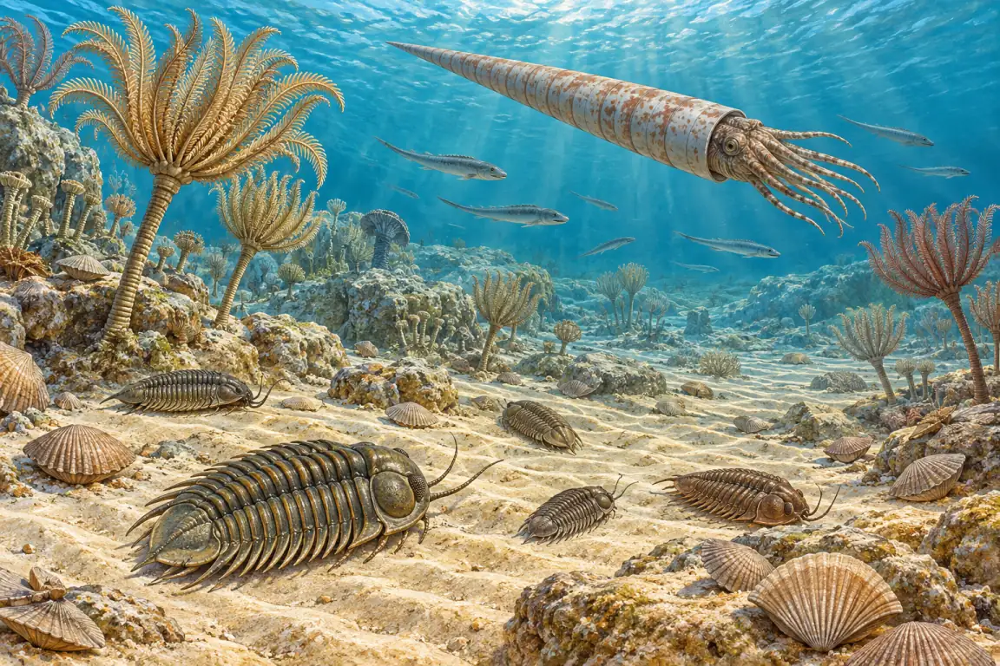
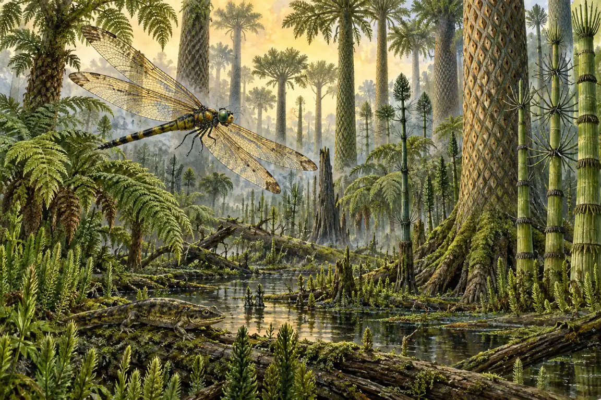
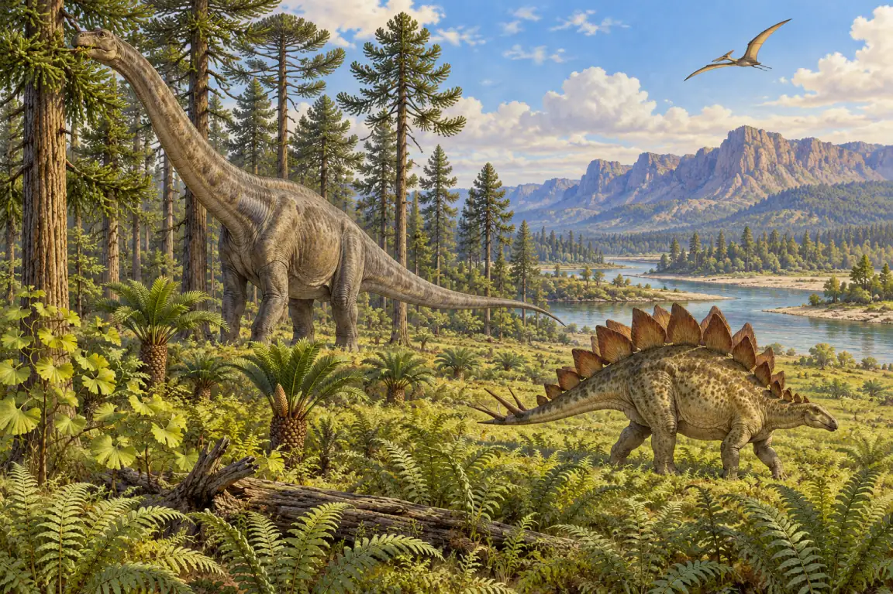
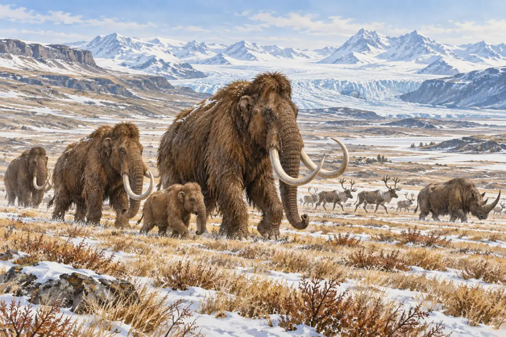
Země je stará asi 4,6 miliardy let. Dějiny života dělíme na geologická období, jejichž hranice často vymezuje hromadné vymírání. Podle zkamenělin určujeme stáří vrstev a poznáváme dávné prostředí.
Skutečné nálezy (archeopteryx je muzejní odlitek). U každé zkameněliny je doba, ze které pochází.
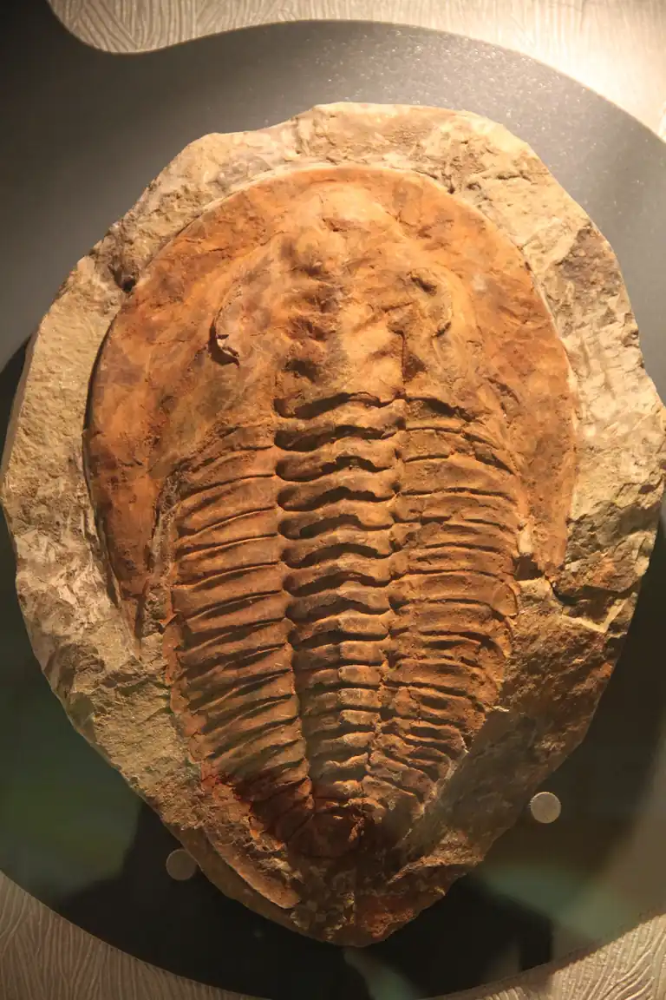
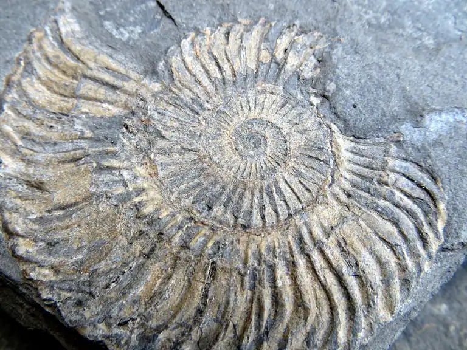
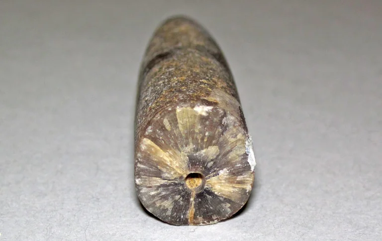
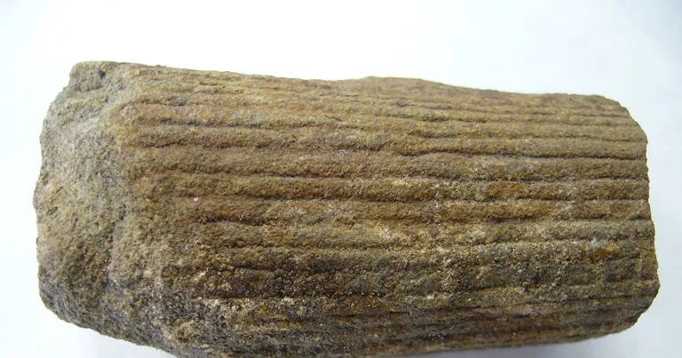
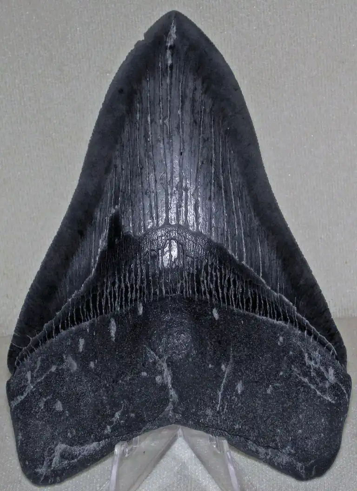
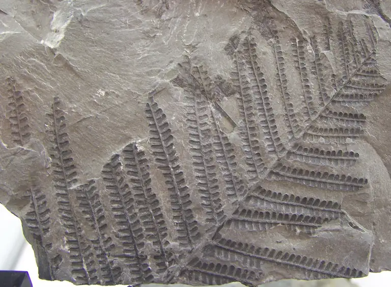
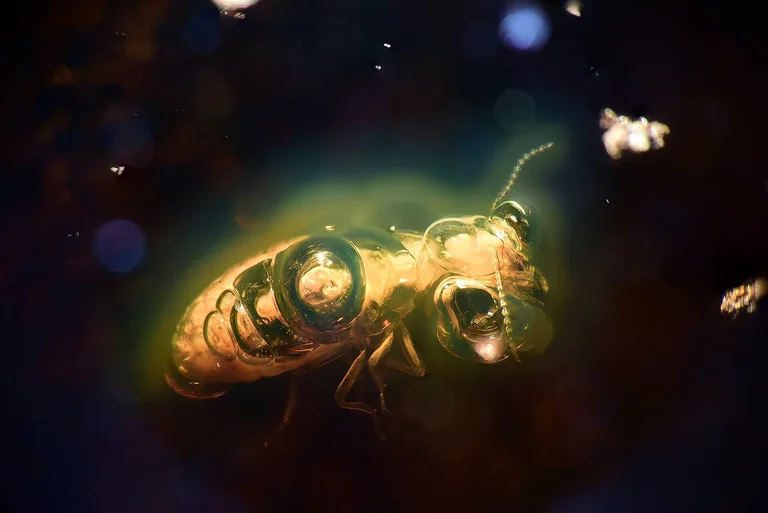
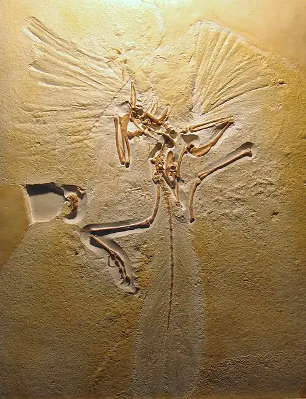